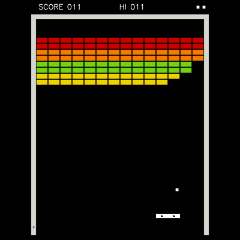
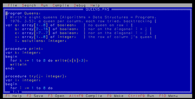

Pictures, animations, games and applications in OCaml, in 2D and 3D
What's New · Play Online · The Code Map · The Library · Documentation · AI Disclaimer
The playground is a small OCaml library for putting shapes on screen and working up to games. It started as a port of Evan Czaplicki's Elm playground package, and keeps its spirit:
This is the package I wanted when I was learning programming. Start by putting shapes on screen and work up to making games. I hope this package will be fun for a broad range of ages and backgrounds! — Evan Czaplicki
Around that library, the repository holds 145 games and 53 applications written with it: the programs that made computing history, from Pong, Breakout and Pac-Man to Doom and Quake, from VisiCalc and MacPaint to Turbo Pascal and Smalltalk-80. Each one is rebuilt in miniature but working, with its story, and small enough to read whole: a few hundred lines to a few thousand. Each runs natively on your desktop and in your browser, from the same source file.
 |
 |
| Breakout (Atari, 1976): 525 lines, in one file. | Turbo Pascal 7 (Borland, 1992): the editor, the compiler and the debugger, 3,213 lines. |
The code map shows the whole repository as a
map: each folder a region, each file a block the size of its code, each
block the code itself once you zoom in. h lists every key,
and its manual says the rest. A link
can open it on one program's own code, as the README's tables do:
codemap.html?code=TinyMario
— a program, its file and the modules it uses (w
widens it to what it uses, then to everything).It is tinybox's code visualizer, after the author's codemap, and runs on any directory: xix and IX have theirs.
Everything is written from scratch, one idea per module, each interface explaining its idea: the playground, graphics, physics, audio, AI, GUI, networking, cryptography and compression, the terminal, application engines, game kits, languages.
The OCaml package documentation, generated by odoc. The most important package is elm_playground.
And beyond the API:
The 2D playground API and the ideas behind it are the work of Evan
Czaplicki, for Elm. I (Yoann Padioleau) ported the API and its ideas,
and some of the web backend, to OCaml, and added a native backend: that
is the playground up to
version 0.1.7
(December 2024), with a few games (Pong, Snake, Tetris, Asteroid).
Playground3d is adapted from Luca Mugnaini's elm-playground-3d.
Since September 2026, almost everything around that library is written
by AI: by Claude, Anthropic's model, in Claude Code. The repository is
now about 280,000 lines of OCaml, tests included: the games and apps,
the other APIs (Physics, Audio,
Ai, Gui, ...), the rasterizers, tinybox, the
code map, and this website.
What I do is direct the work: I choose what to build, its design, which programs to rebuild and at what size, and I review the code. The originals, and their designs, are the work of their authors, named in each program's header and in the README's Trademarks and originals; the README's AI disclaimer says more.
The OCaml Elm Playground is by Yoann Padioleau, after Evan Czaplicki's Elm playground, mostly written by Claude (AI disclaimer), and a companion to xix, IX and Principia Softwarica.